Giới thiệu
khoa học dữ liệu
Học kỳ I, năm học 2026–2027
Trường Đại học Công nghệ, ĐHQGHN
Bài 2
Cài đặt
và môi trường
Chọn công cụ. Chạy được. Kiểm lại số.
Rồi mới tin kết luận.
Tổng quan buổi học
- Bốn bức ảnh công cụ, rồi câu chốt về trách nhiệm người dùng
- Python, NumPy, pandas, Matplotlib, SciPy, scikit-learn — cài và thực hành
- JupyterLab, VS Code, Cloud · SQL/Git · vibe coding với AI
- Lab doanh thu + lab Student Performance (kiểm số, không tin mù)
1.
Vô vàn công cụ
Bốn bức ảnh. Một câu chốt.
Công cụ cho Data Engineer
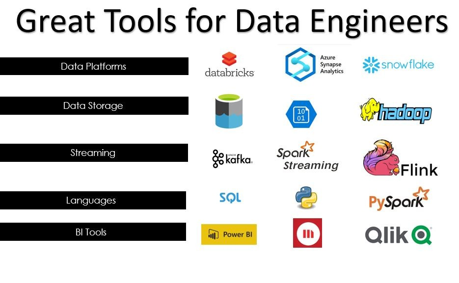
Ảnh: Great Tools for Data Engineers · LinkedIn / media.licdn.com.
Công cụ cho Data Analytics
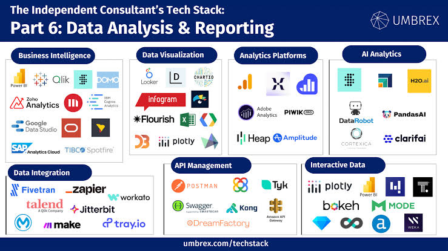
Ảnh: Data Analytics Tools · bộ sưu tập bài giảng.
Công cụ quanh Big Data
Ảnh: Big Data landscape · bộ sưu tập bài giảng.
Công cụ cho Data Science
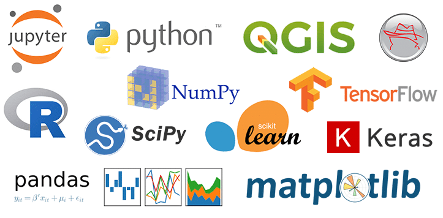
Ảnh: Data Science tools · bộ sưu tập bài giảng.
Nhiều logo. Một trách nhiệm
- Logo đổi theo năm. Bài toán và cách kiểm số thì giữ lại được.
- Chọn công cụ theo việc cần làm: lấy dữ liệu, làm sạch, phân tích, triển khai, hay nhờ AI viết code.
- Công cụ đổi nhanh. Cách đọc tệp, in số, và khớp báo cáo với code thì giữ lại được.
2.
Python, thư viện
và phân tích
venv · NumPy · pandas · Matplotlib · SciPy · scikit-learn
Python

- Nhóm. Ngôn ngữ nền tảng cho ETL, thống kê, ML, triển khai AI.
- Lịch sử. Guido van Rossum bắt đầu cuối thập niên 1980; bản công khai 1991 (CWI).
- Tính năng. Cú pháp dễ đọc; thư viện phong phú; thủ tục, OOP và hàm.
Nguồn: Python FAQ · logo Wikimedia Commons.
Khái niệm phải nắm
- Interpreter, script, module, package, dependency.
- pip so với Conda; môi trường ảo venv.
- Hai dự án có thể cần phiên bản thư viện khác nhau.
- Cài toàn hệ thống ≠ cài theo từng dự án.
- requirements.txt và tính tái lập.
Thực hành — Linux / macOS
mkdir ds-workshop && cd ds-workshop
python3 -m venv .venv
source .venv/bin/activate
python -m pip install --upgrade pip
python -m pip install numpy pandas matplotlib seaborn scikit-learn jupyterlab
python -m pip freeze > requirements.txt
python -c "import numpy, pandas, sklearn; print('Environment OK')"
Tham khảo: venv docs.
Thực hành — Windows PowerShell
mkdir ds-workshop; cd ds-workshop
py -m venv .venv
.\.venv\Scripts\Activate.ps1
python -m pip install --upgrade pip
python -m pip install numpy pandas matplotlib seaborn scikit-learn jupyterlab
python -m pip freeze > requirements.txt
NumPy — tên và lịch sử

- Tên. Numerical Python — thư viện mảng và tính toán số cho Python.
- Lịch sử. Từ Numeric và Numarray; Travis Oliphant hợp nhất thành NumPy năm 2006.
- Vì sao dùng. Nền tảng cho pandas, SciPy, scikit-learn; phép toán vector hóa nhanh hơn vòng lặp Python thuần.
Nguồn: numpy.org/doc.
NumPy — tính năng và thử
- Mảng nhiều chiều (ndarray), broadcasting, đại số tuyến tính.
- Thực hành: trung bình, độ lệch chuẩn, chuẩn hóa vector.
import numpy as np
x = np.array([8.0, 10.0, 12.0, 15.0])
print("mean:", x.mean())
print("std:", x.std(ddof=1))
print("z-score:", (x - x.mean()) / x.std(ddof=1))
pandas — tên và lịch sử

- Tên. Thư viện bảng (DataFrame) cho phân tích dữ liệu có cấu trúc.
- Khởi tạo. Wes McKinney bắt đầu dự án năm 2008; hiện do cộng đồng duy trì.
- Vì sao dùng. Đọc CSV/Excel/Parquet, lọc, groupby, xử lý thiếu — gần bảng tính nhưng tái lập bằng code.
Nguồn: pandas Getting Started.
pandas — tính năng và thử
- DataFrame, lọc, nhóm, gộp bảng, ngày tháng, giá trị thiếu.
- Thực hành tối thiểu trước lab doanh thu:
import pandas as pd
df = pd.DataFrame({
"product": ["Laptop", "Mouse", "Laptop"],
"quantity": [2, 10, 1],
"price": [15000000, 250000, 15000000],
})
df["revenue"] = df["quantity"] * df["price"]
print(df.groupby("product")["revenue"].sum())
Matplotlib và Seaborn
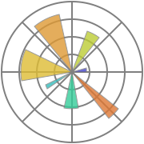
- Matplotlib. John D. Hunter — kiểm soát chi tiết biểu đồ.
- Seaborn. Michael Waskom — trực quan thống kê nhanh.
Nguồn: Matplotlib docs.
Lab doanh thu — sales.csv
date,product,category,quantity,price
2026-01-02,Laptop,Electronics,2,15000000
2026-01-03,Mouse,Accessories,10,250000
2026-01-04,Keyboard,Accessories,5,700000
2026-02-01,Laptop,Electronics,1,15000000
2026-02-05,Monitor,Electronics,3,4200000
2026-02-07,Mouse,Accessories,8,250000
2026-03-02,Monitor,Electronics,2,4200000
2026-03-05,Keyboard,Accessories,4,700000
Lab doanh thu — analyze_sales.py
import pandas as pd
import matplotlib.pyplot as plt
df = pd.read_csv("sales.csv", parse_dates=["date"])
print("Kích thước:", df.shape)
print("Thiếu:\n", df.isna().sum())
print("Trùng:", df.duplicated().sum())
df["revenue"] = df["quantity"] * df["price"]
monthly = (df.assign(month=df["date"].dt.to_period("M").astype(str))
.groupby("month", as_index=False)["revenue"].sum())
ranking = df.groupby("product")["revenue"].sum().sort_values(ascending=False)
print(monthly); print(ranking)
plt.bar(monthly["month"], monthly["revenue"])
plt.title("Doanh thu theo tháng"); plt.tight_layout()
plt.savefig("monthly_revenue.png", dpi=150)
Kết quả đã chạy — doanh thu
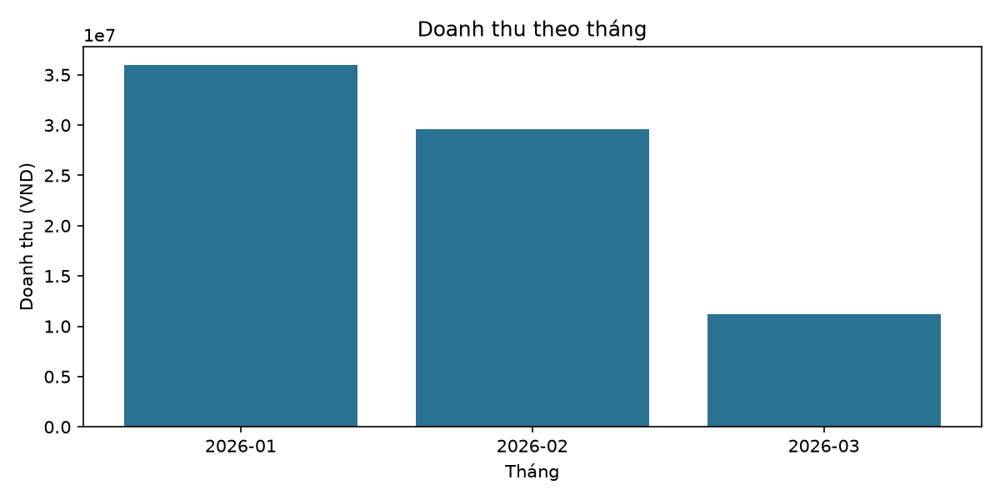
- Tổng: 76.800.000 VND. Laptop 45.000.000.
- Tháng: 01 = 36.000.000 · 02 = 29.600.000 · 03 = 11.200.000.
SciPy
- Tối ưu, tích phân, thống kê ứng dụng — bổ sung NumPy.
- Trong lab UCI: Spearman/Pearson; p nhỏ ≠ nhân quả.
Nguồn: SciPy docs.
scikit-learn

- Lịch sử. David Cournapeau, Google Summer of Code 2007; cộng đồng phát triển tiếp.
- Tính năng. Hồi quy, phân loại, clustering, tiền xử lý, CV, pipeline.
- Kiến thức. Train/test; MAE/RMSE; leakage; luôn so với baseline.
Nguồn: scikit-learn.org.
Thực hành — California Housing
from sklearn.datasets import fetch_california_housing
from sklearn.model_selection import train_test_split
from sklearn.pipeline import make_pipeline
from sklearn.impute import SimpleImputer
from sklearn.preprocessing import StandardScaler
from sklearn.linear_model import Ridge
from sklearn.metrics import mean_absolute_error, mean_squared_error
housing = fetch_california_housing(as_frame=True)
X, y = housing.data, housing.target
X_train, X_test, y_train, y_test = train_test_split(
X, y, test_size=0.2, random_state=42)
model = make_pipeline(SimpleImputer(strategy="median"),
StandardScaler(), Ridge(alpha=1.0))
model.fit(X_train, y_train)
pred = model.predict(X_test)
print("MAE:", mean_absolute_error(y_test, pred))
print("RMSE:", mean_squared_error(y_test, pred) ** 0.5)
Kết quả đã chạy — Ridge
- n_train = 16512 · n_test = 4128 · 8 đặc trưng.
- MAE ≈ 0,533 · RMSE ≈ 0,746 (đơn vị ×100.000 USD).
- Baseline (trung bình train): MAE ≈ 0,906 — Ridge tốt hơn baseline.
3.
JupyterLab,
VS Code, Cloud
Notebook · IDE · Colab · Kaggle
JupyterLab / Notebook

- Lịch sử. Từ IPython (Fernando Pérez, 2001); Project Jupyter 2014.
- Tính năng. Chạy theo cell; Markdown; lưu kết quả phân tích.
- Hạn chế. Kernel có thể lệch thứ tự cell; notebook không tự bảo đảm tái lập.
Nguồn: jupyter.org/install.
JupyterLab — cài và thử
python -m pip install jupyterlab
jupyter lab
import sys, pandas as pd, numpy as np
print("Python:", sys.version)
print("pandas:", pd.__version__)
print("NumPy:", np.__version__)
Visual Studio Code
- Đơn vị. Microsoft — editor, terminal, debugger, Git, extension Python/Jupyter.
- Thiết lập. Mở ds-workshop → chọn interpreter .venv → chạy analysis.py.
- Điểm mạnh. Nhiều file, kiểm thử, kết hợp AI coding agents.
Nguồn: VS Code Python.
Google Colab và Kaggle
- Colab. Notebook cloud; không cần cài cục bộ. Giới hạn phiên, bộ nhớ, GPU, lưu file.
- Kaggle Code. Dataset + notebook; đường dẫn /kaggle/input/....
import zipfile, pandas as pd
zipfile.ZipFile("student.zip").extractall("data")
print(pd.read_csv("data/student-mat.csv", sep=";").shape) # (395, 33)
Nguồn: Colab · Kaggle Code.
4.
SQL, Git
và lưu trữ
PostgreSQL · Git · MongoDB · S3
PostgreSQL
- Lịch sử. POSTGRES (Michael Stonebraker, UC Berkeley, từ 1986); tên PostgreSQL từ 1996.
- Tính năng. SQL, JOIN, GROUP BY, CTE, window, transaction, index.
- Thảo luận. SQL vs DataFrame; không tải cả bảng lớn về pandas trước khi cần.
Nguồn: PostgreSQL docs.
Thực hành SQL — sales_db
CREATE TABLE sales (
id SERIAL PRIMARY KEY,
sale_date DATE NOT NULL,
product TEXT NOT NULL,
quantity INTEGER NOT NULL CHECK (quantity > 0),
price NUMERIC(14, 2) NOT NULL CHECK (price >= 0)
);
INSERT INTO sales (sale_date, product, quantity, price) VALUES
('2026-01-02', 'Laptop', 2, 15000000),
('2026-01-03', 'Mouse', 10, 250000),
('2026-02-01', 'Laptop', 1, 15000000),
('2026-02-05', 'Monitor', 3, 4200000);
SELECT product, SUM(quantity * price) AS revenue
FROM sales GROUP BY product ORDER BY revenue DESC;
Git và GitHub
- Git. Linus Torvalds, 2005 — quản lý phiên bản phân tán.
- GitHub. Lưu trữ và cộng tác trên Git (không phải bản thân Git).
git init
git add .
git commit -m "Initial data science project"
Nguồn: git-scm.com/downloads.
Git — .gitignore và tái lập
.venv/
__pycache__/
.ipynb_checkpoints/
.env
data/private/
- Nhánh feature/visualization · thêm biểu đồ · git diff.
- Notebook có output chưa đủ để tái lập: cần dữ liệu, dependency, seed, README.
MongoDB và Amazon S3
- MongoDB. Document JSON — metadata và báo cáo có cấu trúc.
- S3. Object storage cho CSV/PNG/báo cáo; không thay truy vấn quan hệ.
5.
Vibe coding
và AI agents
Đặc tả · sinh code · kiểm thử · phản biện
Ba cách làm việc
| Cách | Sinh viên làm gì | Đánh giá gì |
|---|---|---|
| Coding thủ công | Tự thiết kế và viết code | Thuật toán, cú pháp, debug |
| AI-assisted | Tự viết, nhờ AI gợi ý/giải thích | Đặt câu hỏi và kiểm gợi ý |
| Vibe / agentic | Mô tả yêu cầu, AI xây nhiều phần | Đặc tả, test, kiểm soát thay đổi |
Cursor · Copilot · Codex · Claude Code
- Cursor. AI-native editor (hệ sinh thái VS Code) — chỉnh nhiều file theo chỉ dẫn tự nhiên. cursor.com
- GitHub Copilot. Gợi ý code trong IDE. Copilot
- OpenAI Codex. Coding agent — giao nhiệm vụ có tiêu chí hoàn thành. Codex IDE
- Claude Code. Agent trên terminal/codebase — đọc repo, sửa, chạy test. docs.claude.com
Prompt vibe coding — doanh thu (1/2)
Vai trò. Bạn là kỹ sư phần mềm và chuyên gia khoa học dữ liệu. Hãy xây dựng một ứng dụng phân tích doanh thu bằng Python trong repository hiện tại (notebook hoặc script có bộ lọc và biểu đồ).
Trước khi sửa. Kiểm tra cấu trúc thư mục và xác định yêu cầu còn thiếu. Dùng pandas đọc CSV, tính doanh thu = quantity × price, tổng hợp theo tháng và sản phẩm, tạo dashboard có bộ lọc.
Chức năng. Kiểm tra cột bắt buộc; phát hiện thiếu, số lượng/giá âm, ngày không hợp lệ; KPI và biểu đồ; tải CSV đã lọc; test tự động; requirements.txt và README.
Prompt vibe coding — doanh thu (2/2)
Chất lượng. Kiểm tra schema và kiểu dữ liệu; không âm thầm xóa dòng lỗi. Tách logic tính toán khỏi giao diện để kiểm thử độc lập. Viết unit test cho dữ liệu hợp lệ, trống và sai. Không tạo dữ liệu giả để dashboard trông đúng.
Trước khi xong. Chạy test hiện có, sửa lỗi, báo cáo test nào chạy được / chưa. Tóm tắt file đã đổi, giả định, vấn đề chưa giải quyết.
Tiêu chí đánh giá vibe coding
- Đúng phép tính và kết quả thống kê.
- Xử lý dữ liệu không hợp lệ.
- Test đầy đủ — không chỉ “chạy được”.
- Giải thích được code do AI tạo.
- Tái lập trên môi trường mới; không lộ API key.
Công cụ mở rộng (tự chọn)
| Công cụ | Khái niệm | Thực hành gợi ý |
|---|---|---|
| statsmodels | Mô hình thống kê | Hồi quy, kiểm định, phần dư |
| PyTorch | Tensor, autodiff | Mạng neural nhỏ |
| DuckDB / Polars | SQL nhúng / bảng hiệu năng | So với pandas |
| MLflow / DVC | Thí nghiệm / phiên bản dữ liệu | Ghi metric, tái lập pipeline |
| Lovable / Replit | AI app builder | So xuất mã nguồn và phụ thuộc nền tảng |
Không cần cài hết ngay. Chọn một công cụ và so với công cụ đã học.
Tài liệu chính thức
- Python · Jupyter · VS Code · pandas · NumPy · Matplotlib
- scikit-learn · PostgreSQL · Cursor / Copilot / Claude Code
6.
Lab mẫu
Student Performance
Tải dữ liệu · AI · biểu đồ · kiểm số · kết luận có căn cứ.
Bộ dữ liệu UCI
- Paulo Cortez · UCI. Hai trường THPT Bồ Đào Nha: điểm, nhân khẩu, gia đình, học tập.
- student-mat.csv (Toán) · student-por.csv (Portuguese).
- ZIP gốc: Toán 395×33 · Portuguese 649×33. UCI ghi 649 instances (= Portuguese); 30 features trước G1–G3.
- CSV dùng sep=";". Không sửa file gốc.
Nguồn: UCI dataset 320 · student.zip · DOI 10.24432/C5TG7T.
6.1 — Hỏi trước khi mở AI
- Chất lượng. Bao nhiêu bản ghi, biến số, biến phân loại? Thiếu, trùng, bất thường, sai kiểu?
- Phân phối G3. Điểm cuối kỳ thế nào? Bao nhiêu điểm 0? Toán và Portuguese khác nhau ra sao?
- Liên hệ. G1, G2, studytime, failures, absences với G3 thế nào?
- Giới hạn. Liên hệ quan sát có chứng minh nguyên nhân không? Yếu tố nào có thể bị bỏ sót?
6.2 — Tải dữ liệu UCI về máy
- Mở UCI dataset 320 → tải student.zip → giải nén data/raw/.
- Xác nhận: student-mat.csv, student-por.csv, student.txt.
Cài thư viện cho lab
python -m venv .venv
source .venv/bin/activate # Linux / macOS
# .\.venv\Scripts\Activate.ps1 # Windows PowerShell
python -m pip install --upgrade pip
python -m pip install numpy pandas scipy matplotlib jupyterlab
python -m pip freeze > requirements.txt
6.3 — Đọc CSV trước khi hỏi AI
from pathlib import Path
import numpy as np
import pandas as pd
import matplotlib.pyplot as plt
from scipy import stats
DATA_DIR = Path("data/raw")
math_df = pd.read_csv(DATA_DIR / "student-mat.csv", sep=";")
port_df = pd.read_csv(DATA_DIR / "student-por.csv", sep=";")
print("Math:", math_df.shape)
print("Portuguese:", port_df.shape)
display(math_df.head())
display(math_df.dtypes)
Bước đọc — chúng ta thấy gì?
Math: (395, 33) Portuguese: (649, 33)
Hai con số trong ngoặc không phải “mã lỗi”. Con số đầu là số học sinh (số dòng). Con số sau là số cột thông tin về mỗi học sinh. Toán có 395 học sinh; môn Tiếng Bồ Đào Nha có 649 học sinh. Hai file không cùng kích thước — đó là tín hiệu quan trọng trước khi so sánh hai môn.
Vì sao phải khóa dấu phân cách?
File gốc của UCI dùng dấu chấm phẩy (;) để tách cột, không phải dấu phẩy. Nếu quên sep=";", pandas có thể đọc cả hàng thành một cột duy nhất. Khi đó mọi phân tích sau đều sai từ gốc, dù biểu đồ vẫn “vẽ được”.
Hàm kiểm toán chất lượng
def audit_data(df, name):
print(f"\n===== {name} =====")
print("Kích thước:", df.shape)
print("Số bản ghi trùng:", df.duplicated().sum())
print("Số ô thiếu:", int(df.isna().sum().sum()))
print("\nKiểu dữ liệu:")
print(df.dtypes)
print("\nThống kê mô tả:")
display(df.describe(include="all").T)
audit_data(math_df, "Mathematics")
audit_data(port_df, "Portuguese")
Assert đúng từng file
assert "G3" in math_df.columns
assert "G3" in port_df.columns
assert math_df.shape == (395, 33), "Math: khác ZIP gốc"
assert port_df.shape == (649, 33), "Portuguese: khác ZIP gốc"
assert math_df["G3"].between(0, 20).all()
assert port_df["G3"].between(0, 20).all()
print("Các kiểm tra cơ bản đã hoàn tất.")
Kiểm toán chất lượng — bằng chứng
| Tệp | Học sinh | Cột | Dòng trùng | Ô trống | Điểm cuối = 0 |
|---|---|---|---|---|---|
| Toán | 395 | 33 | 0 | 0 | 38 |
| Portuguese | 649 | 33 | 0 | 0 | 15 |
Không có dòng trùng và không có ô trống là tin tốt: ta không phải “vá” dữ liệu trước khi phân tích. Nhưng “sạch về thiếu/trùng” chưa có nghĩa mọi kết luận đều đúng. Nó chỉ có nghĩa bước tiếp theo được phép bắt đầu.
Đếm trên ZIP UCI 00320. Không giả định thứ tự dòng hai file là cùng một học sinh.
Điểm 0 đang nói điều gì?
Ở Toán, 38/395 học sinh (khoảng 9,6%) có điểm cuối kỳ bằng 0. Ở Portuguese chỉ 15/649 (khoảng 2,3%). Điểm 0 có thể là trượt nặng, vắng thi, hoặc quy ước ghi nhận đặc biệt — UCI không giải thích từng trường hợp. Hệ quả thực tế: phân phối điểm Toán sẽ bị “kéo” về phía thấp hơn, và trung bình Toán sẽ thấp hơn nếu ta không để ý khối điểm 0 này.
Prompt 1 — Kiểm toán (1/3)
Vai trò. Bạn là chuyên gia Khoa học dữ liệu, thống kê ứng dụng và kiểm toán chất lượng dữ liệu.
Bối cảnh. Tôi đang thực hiện bài thực hành EDA trên bộ dữ liệu Student Performance của UCI Machine Learning Repository: https://archive.ics.uci.edu/dataset/320/student+performance
File. Tôi đã tải dữ liệu về máy và đặt hai file: data/raw/student-mat.csv và data/raw/student-por.csv. Hãy thực hiện theo đúng các bước sau.
Bước 1 — Kiểm tra đầu vào. Xác nhận hai file tồn tại và đọc CSV bằng pandas. Xác minh dấu phân cách của CSV; bộ dữ liệu gốc sử dụng dấu chấm phẩy. Không tự ý sửa file dữ liệu gốc.
Bước 2 — Kiểm kê cấu trúc. Báo cáo số dòng, số cột, tên cột, kiểu dữ liệu và một số dòng mẫu. Phân loại biến số, biến phân loại và biến điểm. Giải thích ý nghĩa các biến G1, G2, G3, studytime, failures và absences dựa trên tài liệu UCI.
Prompt 1 — Kiểm toán (2/3)
Bước 3 — Kiểm toán chất lượng. Đếm giá trị thiếu theo cột. Đếm bản ghi trùng hoàn toàn. Kiểm tra miền giá trị và các giá trị bất thường. Kiểm tra các giá trị hợp lệ của biến phân loại. Không tự động xóa dữ liệu hoặc thay thế giá trị khi chưa nêu rõ lý do.
Bước 4 — Kiểm chứng. So sánh kết quả với metadata chính thức của UCI. Nếu số dòng, số cột hoặc miền giá trị khác kỳ vọng, hãy báo cáo khác biệt và điều tra; không được ép dữ liệu khớp bằng cách xóa dòng. Phân biệt kết quả thực sự quan sát được với giả thuyết cần kiểm tra thêm.
Bước 5 — Tạo đầu ra. Tạo một notebook EDA có code và giải thích bằng tiếng Việt. Lưu báo cáo kiểm toán thành reports/data_audit.md. Liệt kê những vấn đề cần xử lý ở bước tiếp theo.
Prompt 1 — Kiểm toán (3/3)
Bắt buộc. Hãy chạy code nếu môi trường cho phép. Không được tuyên bố đã chạy, đã đọc file hoặc đã xác minh bất kỳ kết quả nào nếu chưa thực sự thực hiện thao tác đó.
Kỳ vọng shape. Toán 395×33 · Portuguese 649×33 (theo ZIP gốc UCI 00320). Nếu khác, báo cáo và điều tra.
Yêu cầu sinh viên. Đối chiếu báo cáo AI với kết quả in ra từ pandas. AI có thể đề xuất kiểm tra đúng nhưng vẫn diễn giải sai một biến hoặc nhầm kết quả từ file Toán sang file Tiếng Bồ Đào Nha.
Sau Prompt 1 — bản đồ biến số
Khi AI trả báo cáo kiểm toán, việc đầu tiên không phải “tin”, mà là đối chiếu với bảng ta vừa tự chạy. Các biến điểm G1, G2, G3 lần lượt là điểm kỳ 1, kỳ 2 và điểm cuối năm. studytime là mức thời gian học trong tuần (thang bậc 1–4, không phải số giờ tuyệt đối). failures là số lần đã trượt lớp trước đó (0–3). absences là số buổi nghỉ.
6.4 — Sáu biểu đồ bắt buộc
AI viết code; sinh viên chạy và kiểm số liệu.
| Biểu đồ | Câu hỏi cần trả lời |
|---|---|
| Histogram của G3 | Điểm cuối kỳ phân phối như thế nào? |
| Boxplot G3 theo môn học | Điểm giữa hai môn có khác biệt không? |
| Scatter plot G1, G2, G3 | Điểm các kỳ có liên hệ như thế nào? |
| Boxplot theo studytime | Nhóm thời gian học khác nhau có điểm khác nhau không? |
| Boxplot theo failures | Số lần trượt trước đây có liên hệ với điểm cuối kỳ không? |
| Scatter plot absences và G3 | Số buổi nghỉ có xu hướng liên hệ với điểm không? |
Code — histogram và boxplot
from pathlib import Path
import matplotlib.pyplot as plt
OUT = Path("reports/figures")
OUT.mkdir(parents=True, exist_ok=True)
math = math_df.copy(); math["subject"] = "Mathematics"
port = port_df.copy(); port["subject"] = "Portuguese"
fig, ax = plt.subplots(figsize=(8, 4))
ax.hist(math["G3"], bins=21, alpha=0.6, label="Mathematics")
ax.hist(port["G3"], bins=21, alpha=0.6, label="Portuguese")
ax.set(title="Phân phối điểm cuối kỳ", xlabel="G3 (0–20)", ylabel="Số học sinh")
ax.legend(); fig.tight_layout()
fig.savefig(OUT / "grade_distribution.png", dpi=150)
fig, ax = plt.subplots(figsize=(7, 4))
ax.boxplot([math["G3"], port["G3"]], tick_labels=["Mathematics", "Portuguese"])
ax.set(title="G3 theo môn học", ylabel="G3 (0–20)")
fig.tight_layout(); fig.savefig(OUT / "grade_by_subject.png", dpi=150)
Matplotlib cũ: thay tick_labels bằng labels.
Câu hỏi dẫn đường
Dữ liệu đã sạch. Tiếp theo ta lần lượt xem từng kết quả đã chạy: phân phối điểm cuối năm, khác biệt giữa hai môn, điểm các kỳ trước, thời gian học, lần trượt và buổi nghỉ. Mỗi slide dưới đây gồm kết quả + phân tích giải thích ngay bên cạnh. Cuối phần lab, mọi insight được gom vào một bảng để ra quyết định.
Kết quả 1 — Phân phối điểm cuối năm
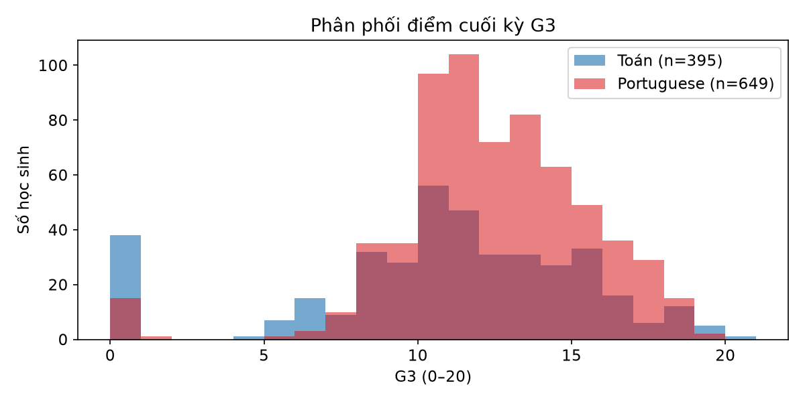
Histogram đếm số học sinh ở từng mức điểm 0–20. Toán: trung bình khoảng 10,4, trung vị 11, độ lệch chuẩn khoảng 4,6. Portuguese: trung bình khoảng 11,9, trung vị 12, độ lệch chuẩn khoảng 3,2.
Giải thích. Trung bình là điểm “trải đều”; trung vị là học sinh đứng giữa khi xếp điểm. Toán có nhiều điểm 0 hơn (38/395) nên trung bình bị kéo xuống và điểm “rải” rộng hơn. Portuguese đồng đều hơn.
Kết quả 2 — So điểm hai môn
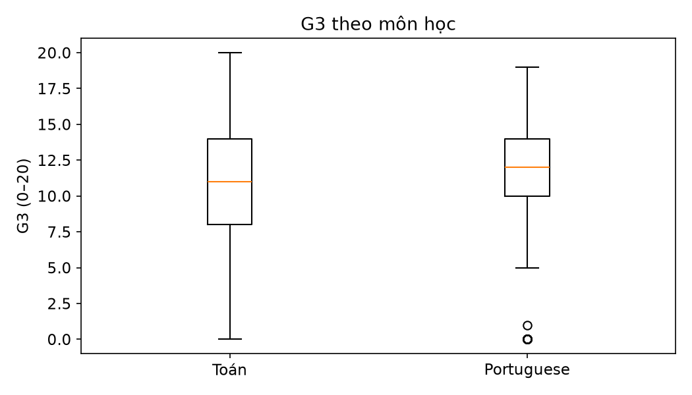
Hộp ria cho thấy mức điểm trung tâm của Portuguese cao hơn Toán khoảng 1,5 điểm theo trung bình, và độ phân tán Toán lớn hơn.
Giải thích. Không kết luận vội “Portuguese dễ hơn / học sinh giỏi hơn”, vì hai file có thể chứa nhiều học sinh trùng nhau (UCI gợi ý khoảng 382 học sinh xuất hiện ở cả hai tệp). Khác biệt môn là tín hiệu cần điều tra thêm (độ khó, cách chấm, thành phần lớp), chưa đủ để ra chính sách chỉ từ một hình.
Code — scatter G1/G2 và nhóm
fig, axes = plt.subplots(1, 2, figsize=(11, 4))
for ax, x in zip(axes, ["G1", "G2"]):
ax.scatter(math[x], math["G3"], alpha=0.55)
ax.set(title=f"{x} vs G3 — Mathematics", xlabel=x, ylabel="G3")
fig.tight_layout(); fig.savefig(OUT / "previous_grades.png", dpi=150)
levels = sorted(math["studytime"].unique())
groups = [math.loc[math["studytime"] == lv, "G3"] for lv in levels]
fig, ax = plt.subplots(figsize=(8, 4))
ax.boxplot(groups, tick_labels=[str(lv) for lv in levels])
ax.set(title="G3 theo studytime", xlabel="studytime", ylabel="G3")
fig.tight_layout(); fig.savefig(OUT / "grade_by_studytime.png", dpi=150)
Code — failures và absences
failure_levels = sorted(math["failures"].unique())
groups = [math.loc[math["failures"] == lv, "G3"] for lv in failure_levels]
fig, ax = plt.subplots(figsize=(8, 4))
ax.boxplot(groups, tick_labels=[str(lv) for lv in failure_levels])
ax.set(title="G3 theo failures", xlabel="failures", ylabel="G3")
fig.tight_layout(); fig.savefig(OUT / "grade_by_failures.png", dpi=150)
fig, ax = plt.subplots(figsize=(8, 4))
ax.scatter(math["absences"], math["G3"], alpha=0.6)
ax.set(title="Absences vs G3 — Mathematics", xlabel="Absences", ylabel="G3")
fig.tight_layout(); fig.savefig(OUT / "absences_vs_grade.png", dpi=150)
Prompt 2 — EDA và biểu đồ (1/2)
Vai trò. Bạn là nhà khoa học dữ liệu chuyên về phân tích khám phá dữ liệu (EDA) và trực quan hóa bằng pandas, NumPy, SciPy và Matplotlib.
Dữ liệu. Hãy sử dụng dữ liệu thực tế trong data/raw/student-mat.csv và data/raw/student-por.csv. Mục tiêu: nghiên cứu phân phối điểm G3 và mối liên hệ giữa kết quả học tập với G1, G2, studytime, failures và absences.
1–3. Đọc hai file CSV bằng sep=";" và xác minh cấu trúc. Tạo bảng thống kê mô tả cho G1, G2, G3, studytime, failures và absences (n, mean, std, median, tứ phân vị, min–max). Vẽ histogram phân phối G3 cho từng môn; ghi rõ số quan sát.
4–6. Vẽ boxplot G3 theo môn học, studytime và failures. Vẽ scatter plot G1–G3, G2–G3 và absences–G3. Tính Pearson và Spearman khi phù hợp; giải thích giả định và giới hạn của mỗi hệ số.
Prompt 2 — EDA và biểu đồ (2/2)
7–8. Với mỗi biểu đồ, nêu một câu hỏi phân tích, một quan sát được tính trực tiếp từ dữ liệu và một giới hạn diễn giải. Lưu biểu đồ vào reports/figures/ và bảng thống kê thành CSV.
9–10. Không tự tạo số liệu, không điền kết quả dự kiến vào báo cáo và không suy luận quan hệ nhân quả từ tương quan. Nếu phát hiện khác biệt giữa hai môn, hãy kiểm tra độ lớn khác biệt, độ phân tán và kích thước mẫu trước khi kết luận.
Ngôn ngữ. Tất cả tiêu đề, nhãn trục, chú thích và phần giải thích phải bằng tiếng Việt. Tạo code chạy lại từ đầu và giải thích cách kiểm tra từng kết quả.
Kết quả 3 — Bảng tóm tắt môn Toán
| Biến (395 học sinh) | Trung bình | Trung vị | Độ lệch chuẩn | Min–Max |
|---|---|---|---|---|
| G1 (kỳ 1) | 10,91 | 11 | 3,32 | 3–19 |
| G2 (kỳ 2) | 10,71 | 11 | 3,76 | 0–19 |
| G3 (cuối năm) | 10,42 | 11 | 4,58 | 0–20 |
| studytime | 2,04 | 2 | 0,84 | 1–4 |
| failures | 0,33 | 0 | 0,74 | 0–3 |
| absences | 5,71 | 4 | 8,00 | 0–75 |
Phân tích / giải thích. Điểm các kỳ quanh 10–11: lớp không đều giỏi cũng không đều yếu. Trung vị failures = 0 nghĩa là đa số chưa từng trượt, nhưng vẫn còn nhóm trượt 1–3 lần. Trung vị nghỉ = 4 nhưng max = 75: có “đuôi dài”, nên chỉ nhìn trung bình sẽ dễ hiểu sai mức nghỉ học điển hình.
6.5 — SciPy trên môn Toán
from scipy import stats
pairs = [
("G1", "G3"), ("G2", "G3"), ("studytime", "G3"),
("failures", "G3"), ("absences", "G3"),
]
for x, y in pairs:
result = stats.spearmanr(math[x], math[y])
print(f"{x} vs {y}: rho={result.statistic:.3f}, p-value={result.pvalue:.5g}")
Kết quả 4 — Hệ số tương quan (Toán)
G1 vs G3: rho=0.878, p≈0 G2 vs G3: rho=0.957, p≈0 studytime vs G3: rho=0.105, p=0.0367 failures vs G3: rho=-0.361, p≈0 absences vs G3: rho=0.018, p=0.725
Phân tích / giải thích. Spearman đo mức “đi cùng chiều theo thứ hạng”. G1/G2 gắn rất chặt với G3 (≈0,88 và 0,96): quỹ đạo điểm trong năm khá ổn định. Failures gắn ngược chiều vừa phải (−0,36). Studytime chỉ yếu (0,11). Absences gần như không có xu hướng đơn điệu rõ trên Toán (p≈0,73). “Đi cùng nhau” chưa chứng minh nguyên nhân — có thể cùng bị ảnh hưởng bởi động lực, gia đình hoặc chất lượng dạy.
Prompt 3 — Phản biện (1/2)
Vai trò. Hãy đóng vai một nhà thống kê độc lập để phản biện kết quả EDA của bộ Student Performance.
1–2. Đọc dữ liệu và thực hiện phân tích bằng SciPy. Tính Pearson và Spearman cho các cặp G1–G3, G2–G3, studytime–G3, failures–G3 và absences–G3. Giải thích vì sao studytime và failures là biến thứ bậc, và vì sao không nên mặc định mọi quan hệ đều tuyến tính.
3–4. Báo cáo hệ số, p-value, kích thước mẫu và giới hạn của phép kiểm định. Điều chỉnh p-value cho các giả thuyết được kiểm tra đồng thời bằng Benjamini–Hochberg; trình bày cả p-value ban đầu và p-value đã điều chỉnh.
Prompt 3 — Phản biện (2/2)
5–6. Với so sánh giữa hai môn, xác định liệu có thể ghép cặp quan sát hay không. Không tự ý giả định thứ tự dòng giữa hai file tương ứng với cùng một học sinh. Phân biệt ý nghĩa thống kê, độ lớn hiệu ứng và ý nghĩa thực tiễn.
7–8. Viết bảng: giả thuyết, phương pháp, kết quả thực tế, cách diễn giải và hạn chế. Không khẳng định nguyên nhân từ kết quả quan sát. Nêu biến gây nhiễu có thể có và phân tích cần thiết để kiểm tra sâu hơn.
Bắt buộc. Chỉ sử dụng kết quả được tính từ dữ liệu thật. Nếu chưa chạy code thì phải nói rõ, không được tự tạo hệ số hoặc p-value.
Kết quả 5 — Chỉnh p-value (Benjamini–Hochberg)
| Cặp | Spearman | p | p đã chỉnh | Pearson |
|---|---|---|---|---|
| G1–G3 | 0,878 | ≈0 | ≈0 | 0,801 |
| G2–G3 | 0,957 | ≈0 | ≈0 | 0,905 |
| studytime–G3 | 0,105 | 0,037 | 0,046 | 0,098 |
| failures–G3 | −0,361 | ≈0 | ≈0 | −0,360 |
| absences–G3 | 0,018 | 0,725 | 0,725 | 0,034 |
Phân tích / giải thích. BH chỉnh p khi thử nhiều cặp cùng lúc, để giảm “tìm thấy liên hệ giả”. Studytime vẫn còn ý nghĩa sau BH nhưng độ lớn rất nhỏ; Pearson studytime p≈0,052 nên tín hiệu đường thẳng lung lay. Cần tách ba lớp: có khác ngẫu nhiên không, khác bao nhiêu, và có đáng đổi chính sách không.
6.6 — Luồng AI trong repository
Prompt 4 — Báo cáo (1/2)
Vai trò. Bạn là một nhà khoa học dữ liệu độc lập, có nhiệm vụ hoàn thiện báo cáo EDA bằng tiếng Việt cho bộ Student Performance của UCI.
Nguồn. Hãy sử dụng các file dữ liệu gốc, code phân tích, bảng thống kê, kết quả kiểm định và biểu đồ đã được tạo trong repository.
Bước 1 — Kiểm tra bằng chứng. Xác định kết quả nào đã được tính bằng code và kết quả nào chưa có bằng chứng. Chạy lại code cần thiết nếu môi trường cho phép. Không tự điền số liệu dựa trên phỏng đoán hoặc kiến thức chung.
Bước 2 — Trả lời câu hỏi nghiên cứu. Mô tả phân phối điểm cuối kỳ. So sánh Toán và Portuguese. Phân tích liên hệ G1, G2, studytime, failures, absences với G3. Phân biệt liên hệ thống kê với quan hệ nhân quả.
Prompt 4 — Báo cáo (2/2)
Bước 3 — Phản biện. Nêu yếu tố gây nhiễu. Phân tích sai lệch do cỡ mẫu, biến thứ bậc và ngoại lệ. Không đánh đồng tương quan với nhân quả. Không khẳng định đại diện mọi học sinh Bồ Đào Nha hoặc Việt Nam.
Bước 4 — Tạo báo cáo. Tạo reports/eda_report.md: (1) tóm tắt; (2) nguồn và giấy phép; (3) phương pháp; (4) thống kê mô tả; (5) từng biểu đồ; (6) kiểm định; (7) kết luận; (8) hạn chế; (9) hướng dẫn tái lập.
Bước 5 — Nhất quán. Mọi số khớp bảng/code. Mọi hình có tiêu đề, nhãn, nguồn. Không trình bày giả thuyết như đã chứng minh. Ghi rõ phân tích chưa làm được. Không tuyên bố đã tạo/chạy/kiểm nếu chưa thực sự thực hiện.
Kết quả 6 — Điểm các kỳ trước (G1, G2)
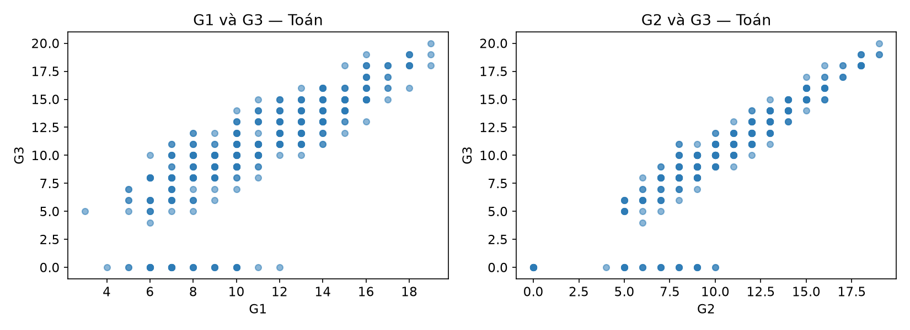
Trên 395 học sinh Toán, Spearman G2–G3 ≈ 0,96; G1–G3 ≈ 0,88. Điểm nằm thành dải chéo: ai thấp giữa năm thường thấp cuối năm.
Giải thích. UCI cảnh báo G1/G2 là điểm cùng năm với G3, nên gắn chặt là điều kỳ vọng. Dùng G1/G2 để dự đoán cuối năm thì hợp lệ; dùng chúng cho cảnh báo sớm đầu năm khi chưa có điểm kỳ này thì là rò thông tin mục tiêu (nhìn thấy đáp án trước).
Kết quả 7 — Thời gian học (studytime)
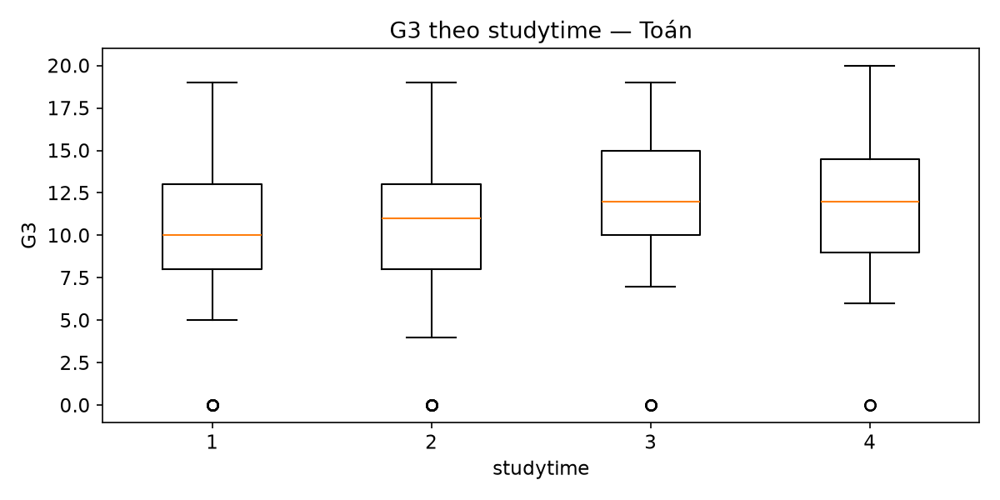
Mức 1→4: n = 105 / 198 / 65 / 27; trung bình G3 ≈ 10,05 / 10,17 / 11,40 / 11,26. Spearman ≈ 0,11.
Giải thích. Nhóm khai báo học nhiều hơn có điểm nhỉnh khoảng một điểm, nhưng mức 4 chỉ 27 người — mẫu mỏng. studytime là thang tự khai báo, không phải giờ đo được. Không đủ để đổ ngân sách vào chiến dịch “ép tăng giờ học”.
Kết quả 8 — Số lần đã trượt (failures)
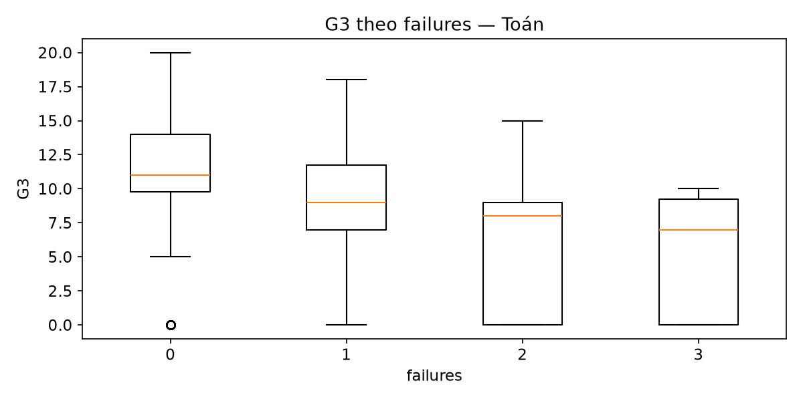
Failures 0→3: n = 312 / 50 / 17 / 16; trung bình G3 ≈ 11,25 / 8,12 / 6,24 / 5,69. Spearman ≈ −0,36.
Giải thích. Đây là tín hiệu rõ nhất ngoài G1/G2: từng trượt thường gắn với điểm cuối thấp hơn và khó khăn có vẻ kéo dài. Không chứng minh “trượt gây ra điểm thấp”, nhưng đủ để ưu tiên kèm cặp sớm ngay từ lần trượt đầu.
Kết quả 9 — Số buổi nghỉ (absences)
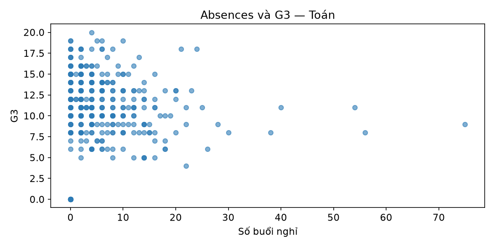
Toán: Spearman ≈ 0,02; p ≈ 0,73 — không thấy xu hướng đơn điệu rõ. Portuguese: ≈ −0,16 và vẫn còn ý nghĩa sau BH. Có điểm nghỉ cực cao (tới 75).
Giải thích. “Không thấy liên hệ trên Toán” ≠ “nghỉ học vô hại”. Quan hệ có thể phi tuyến hoặc khác theo môn. Cần tách nhóm nghỉ rất cao và bổ sung lý do nghỉ trước khi ra quy định kỷ luật.
Kết quả 10 — So với Portuguese
| Cặp (649 học sinh) | Spearman | p đã chỉnh |
|---|---|---|
| G1–G3 / G2–G3 | 0,883 / 0,944 | ≈0 |
| studytime–G3 | 0,275 | ≈0 |
| failures–G3 | −0,448 | ≈0 |
| absences–G3 | −0,159 | ≈0 |
Phân tích / giải thích. Trên Portuguese, studytime và absences “nói to” hơn Toán; failures gắn ngược chiều mạnh hơn (−0,45). Bức tranh chung vẫn nhất quán: quỹ đạo điểm trong năm và lịch sử trượt là hai tín hiệu trung tâm. Hai môn không nên bị ép vào cùng một chính sách nếu chưa kiểm chứng lại trên từng môn.
Câu chuyện tổng quan — bức tranh học sinh
Hãy hình dung hai trường trung học ở Bồ Đào Nha trong bộ dữ liệu UCI. Trên giấy tờ, ta cầm hai bảng điểm và hồ sơ: 395 học sinh môn Toán và 649 học sinh môn Tiếng Bồ Đào Nha, mỗi người gắn với 33 thông tin về nhân khẩu, gia đình, thói quen học và điểm số. Khoảng vài trăm em có thể xuất hiện ở cả hai môn, nên đây không phải hai thế giới tách biệt hoàn toàn, mà là một cộng đồng học đường được nhìn qua hai lăng kính.
Nếu bước vào lớp Toán cuối năm, bức tranh điểm số khá “rộng”: trung bình quanh 10,4/20, học sinh đứng giữa đạt khoảng 11, nhưng độ lệch chuẩn gần 4,6 cho thấy lớp có cả em rất thấp và em khá cao. Đặc biệt, khoảng một phần mười học sinh Toán (38/395) kết thúc năm với điểm 0 — một khối đủ lớn để kéo cả lớp trông yếu hơn so với cảm nhận ở giữa danh sách. Sang lớp Portuguese, không khí đồng đều hơn: trung bình gần 11,9, trung vị 12, độ lệch chuẩn khoảng 3,2, và chỉ khoảng 2% (15/649) nhận điểm 0.
Câu chuyện tổng quan — nhịp học trong năm
Theo dõi từng em qua năm học, ta thấy quỹ đạo khá ổn định. Điểm kỳ 1 và kỳ 2 đi sát điểm cuối năm (hệ số tương quan khoảng 0,88 và 0,96 trên Toán): ai đã thấp giữa năm thường vẫn thấp khi đóng sổ điểm. Đa số chưa từng trượt lớp trước đó (trung vị số lần trượt bằng 0), nhưng nhóm đã trượt một lần thường kết thúc quanh mức 8, còn nhóm trượt hai–ba lần tụt xuống quanh 5–6 — như một dấu hiệu khó khăn đang kéo dài chứ không phải một kỳ “xui”.
Về nhịp sống học đường, học sinh Toán nghỉ trung vị khoảng 4 buổi, nhưng có người nghỉ tới 75 buổi: phần lớn vẫn đi học đều, trong khi một thiểu số vắng mặt rất nặng. Thời gian học tự khai báo thường ở mức trung bình (thang 1–4, trung vị = 2); nhóm khai báo học nhiều hơn có điểm nhỉnh nhẹ, song tín hiệu này mỏng và không đủ để kể thành câu chuyện “học thêm giờ là cứu cánh”. Trên Portuguese, mối liên hệ với thời gian học và buổi nghỉ hiện rõ hơn một chút, nhưng thông điệp lớn vẫn giống nhau: điểm các kỳ trước và lịch sử trượt mới là hai sợi chỉ đỏ xuyên suốt câu chuyện của các em.
Câu chuyện tổng hợp từ phân tích đã chạy trên ZIP UCI 00320; không suy diễn sang học sinh Việt Nam.
Bảng insight để ra quyết định
| Insight | Nguyên nhân (giả thuyết làm việc) | Bằng chứng | Giải thích | Hành động |
|---|---|---|---|---|
| Toán phân tán và có nhiều điểm 0 hơn Portuguese | Độ khó môn / cách ghi nhận điểm 0 / thành phần lớp khác nhau | TB 10,4 vs 11,9; std 4,6 vs 3,2; G3=0: 38 vs 15 | Khác biệt quan sát được, nhưng hai mẫu có thể chồng học sinh | Điều tra riêng tỷ lệ điểm 0 Toán; không gộp hai môn thành một KPI |
| Điểm giữa năm gần như dự báo điểm cuối năm | Cùng quá trình học trong một năm; năng lực/động lực ổn định tương đối | Spearman G2–G3 ≈ 0,96; G1–G3 ≈ 0,88 (n=395) | Liên hệ rất mạnh nhưng dễ gây rò nếu dùng cho cảnh báo đầu năm | Dùng G1/G2 để theo dõi cuối năm; cảnh báo sớm phải dùng tín hiệu đầu năm |
| Học sinh từng trượt thường kết thúc năm thấp hơn | Khó khăn học tập kéo dài; thiếu hỗ trợ sau lần trượt đầu | TB G3: 11,3 → 8,1 → 6,2 → 5,7 theo failures 0–3; ρ≈−0,36 | Tín hiệu rõ và nhất quán, dù nhóm trượt nhiều lần còn nhỏ | Ưu tiên kèm cặp ngay khi xuất hiện lần trượt đầu |
| “Học nhiều hơn” không phải đòn bẩy mạnh trên Toán | studytime tự khai báo; mẫu mức 4 mỏng; nhiễu động lực/điều kiện | ρ≈0,11; mức 4 chỉ 27 học sinh; chênh TB khoảng 1 điểm | Có tín hiệu nhỏ, chưa đủ để kết luận nhân quả hay đổ ngân sách lớn | Đo giờ/chất lượng học thật trước khi mở chiến dịch tăng giờ |
| Nghỉ học không được bỏ qua dù hệ số Toán yếu | Quan hệ có thể phi tuyến; lý do nghỉ khác nhau; khác biệt theo môn | Toán ρ≈0,02 p≈0,73; Portuguese ρ≈−0,16; max nghỉ=75 | Thiếu liên hệ đơn điệu ≠ vô hại; đuôi nghỉ cực cao cần xem riêng | Tách nhóm nghỉ cao + bổ sung lý do nghỉ trước khi kỷ luật |
| Không mang kết luận Bồ Đào Nha sang Việt Nam nguyên xi | Khác hệ thống giáo dục, thang điểm, bối cảnh xã hội | Dữ liệu chỉ từ hai trường THPT Bồ Đào Nha (UCI) | Insight mang tính học phương pháp và giả thuyết, không phải chuẩn quốc gia | Lặp lại quy trình trên dữ liệu trường/sở địa phương trước khi áp dụng |
10.1 — Chạy lại trên ba môi trường
- JupyterLab cục bộ. Quản venv, đường dẫn, Git. jupyter lab.
- Google Colab. Upload ZIP, giải nén trong phiên, chạy cùng notebook.
- Kaggle Code. Add Input, sửa đường dẫn /kaggle/input/....
10.2 — So IDE / AI trên cùng nhiệm vụ
- Giao Prompt 1 cho hai công cụ, ví dụ Cursor và OpenCode.
- Chấm: độ chính xác số, số test vượt, lỗi do AI tạo, mức dễ đọc, khả năng tái lập.
- Không kết luận công cụ nào hơn chỉ vì sinh code nhanh hơn.
10.3 — Git, PostgreSQL, MongoDB, S3
| Công nghệ | Vai trò trong lab | Mở rộng |
|---|---|---|
| Git | Theo dõi code và lịch sử | Nhánh phân tích, PR, review |
| PostgreSQL | Bảng, truy vấn thống kê | Import CSV, GROUP BY |
| MongoDB | Document JSON | Lưu metadata và báo cáo |
| Amazon S3 | Object / artifact | Upload CSV, PNG, báo cáo |
PostgreSQL/MongoDB là mở rộng. Bắt đầu bằng CSV. S3 không thay truy vấn quan hệ. Không commit credential.
10.4 — Mở rộng kho dữ liệu
- Hugging Face Datasets · Kaggle Datasets · UCI Repository.
- Tự tìm một dataset bảng: kiểm nguồn–giấy phép, audit, EDA bằng AI, kiểm bằng code.
- Đối chiếu với bản UCI nếu gặp lại Student Performance trên Kaggle.
Tổng kết buổi 2
- Nhiều logo, một trách nhiệm: tự kiểm số trước khi tin công cụ hay AI.
- Python/venv + NumPy/pandas/Matplotlib/SciPy/scikit-learn có thực hành.
- Jupyter, VS Code, Cloud, SQL/Git, vibe coding — so bằng độ đúng số.
- Lab UCI Student Performance: 395 và 649 dòng; prompt đầy đủ.
Việc trước buổi sau
- Tải student.zip, tạo cấu trúc lab, cài bốn thư viện trong venv.
- Chạy audit + assert: khóa 395×33 và 649×33 trước Prompt 1.
- Chạy đủ bốn prompt. Mỗi bước đối chiếu pandas / SciPy / PNG trên máy của bạn.